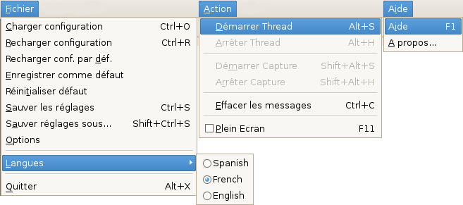

Pré: Référence --- ↑Home --- Suiv: Référence → Fenêtre Vidéo
DVGrabGUI 0.9.4
Référence → Menus

-
Fichier:
-
Charger configuration
Charger les réglages depuis un fichier .dvs.
-
Recharger configuration
Recharger les réglages depuis le fichier .dvs courant (peut être
équivalent à "Recharger conf. par déf." ci-dessous).
-
Recharger conf. par déf.
Recharger les réglages par défaut
(depuis ~/.dvgrabgui/default.dvs.xml).
-
Enregistrer comme défaut
Enregistrer les réglages actuels dans la configuration par défaut
(dans le fichier ~/.dvgrabgui/default.dvs.xml).
-
Réinitialiser défaut
Réinitialiser les réglages par défaut (en écrasant
~/.dvgrabgui/default.dvs.xml – vous devez
ensuite le recharger si vous voulez: "Recharger conf. par déf.").
-
Sauver les réglages
Enregistrer les réglages actuels dans le fichier .dvs courant.
-
Sauver réglages sous…
Enregistrer les réglages actuels dans un autre fichier .dvs.
-
Options
Affiche l'onglet Réglages.
-
Langues
Sélectionner la langue de l'interface. Notez que la locale
correspondante doit être installée sur votre système: sous
Debian Etch, par exemple, seule la locale sélectionnée à
l'installation est disponible par défaut…
-
Quitter
Quitter l'application.
-
Action:
-
Démarrer Thread
Démarrer le thread de capture (c-à-d passer en mode "pause").
-
Arrêter Thread
Arrêter le thread de capture (c-à-d quitter les mode "pause").
-
Démarrer Capture
Démarrer l'enregistrement vidéo.
-
Arrêter Capture
Arrêter l'enregistrement vidéo.
-
Effacer les messages
Effacer la fenêtre "Messages".
-
Plein Ecran
Entrer/quitter le mode plein écran.
-
Aide:
-
Aide
Afficher la fenêtre d'aide.
-
A propos…
Afficher la traditionnelle boîte de dialogue "A propos…".
Pré: Référence --- ↑Home --- Suiv: Référence → Fenêtre Vidéo
(c) 2006, 2007, 2008 Bastien Montagne (montagne29 chez wanadoo point fr).
Projet hébergé sur sourceforge.net/projects/dvgrabgui.